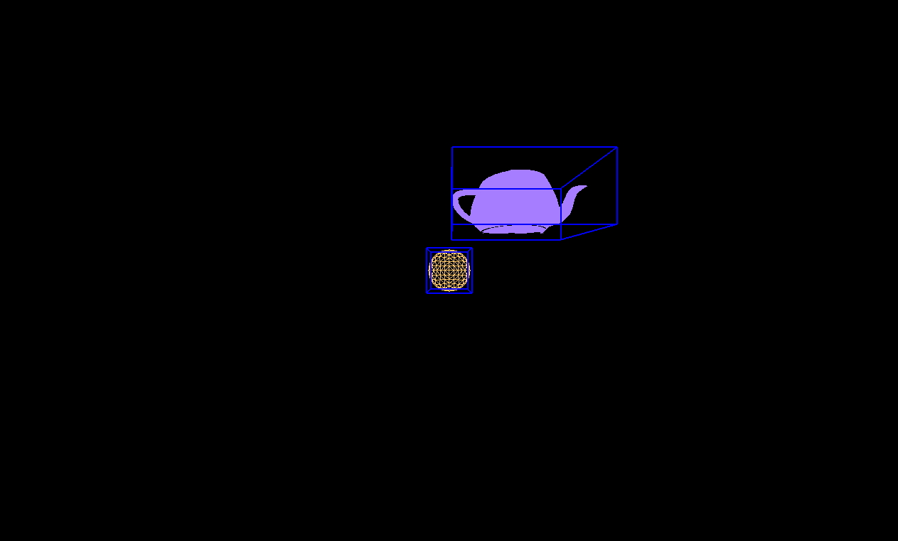
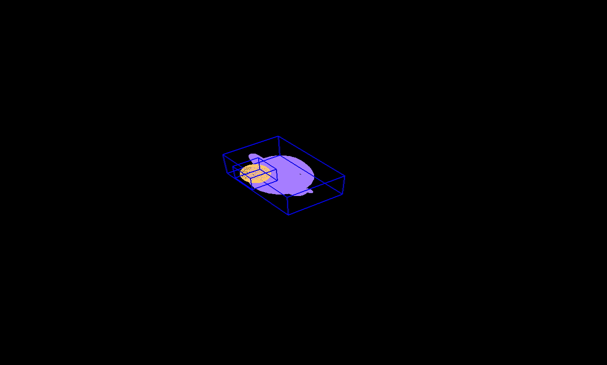
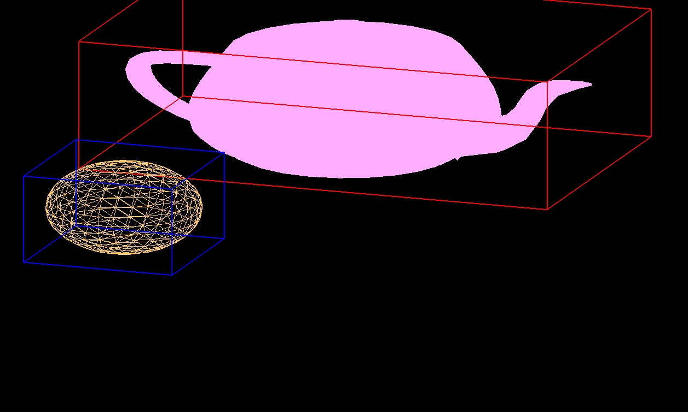
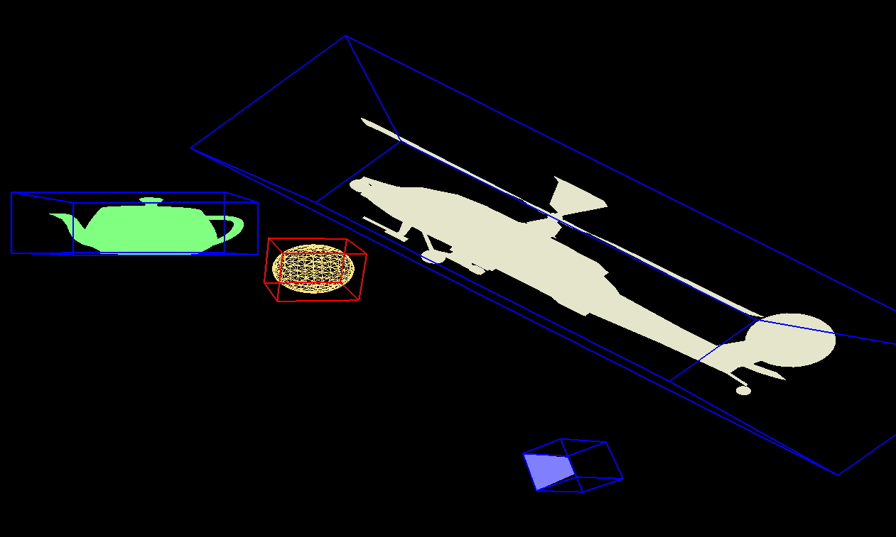
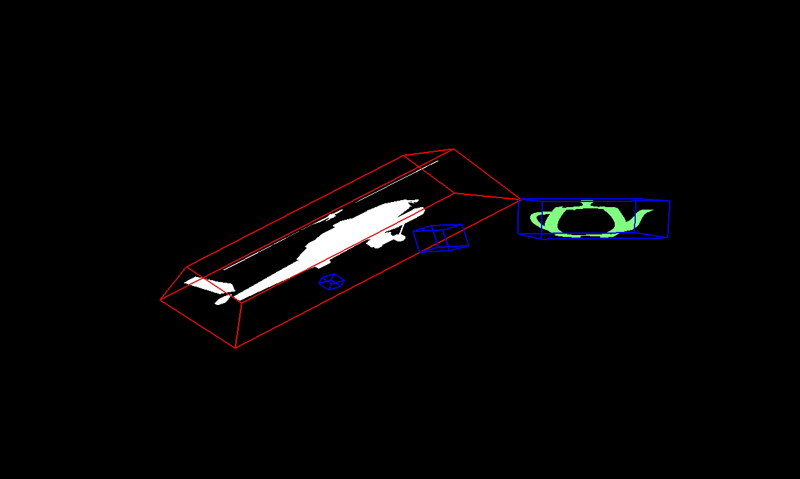
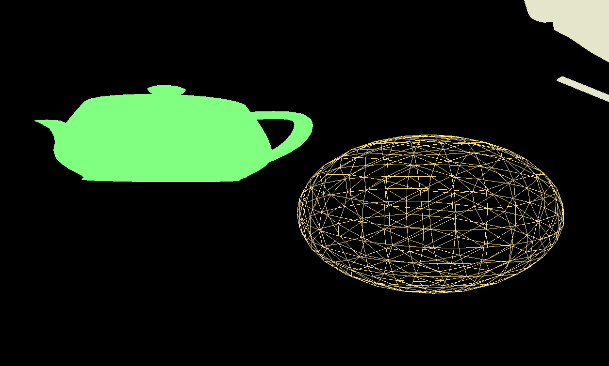
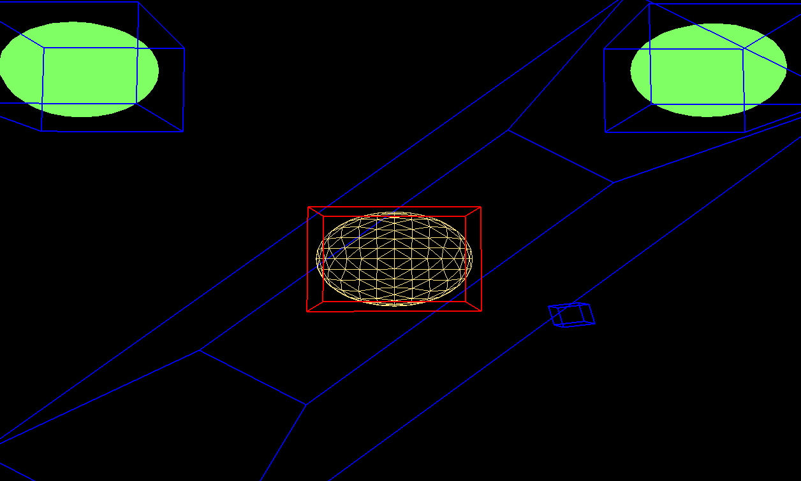
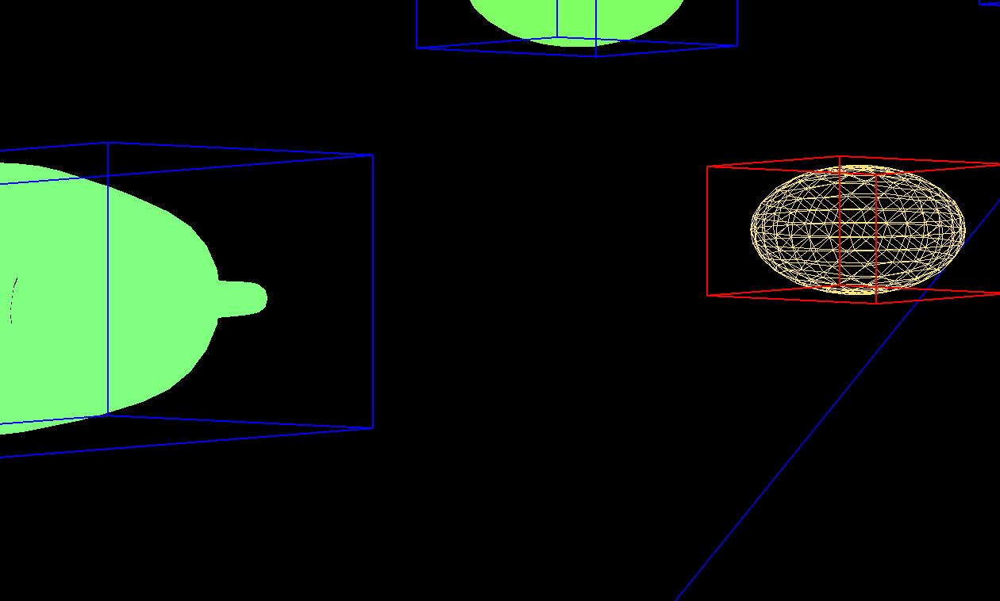
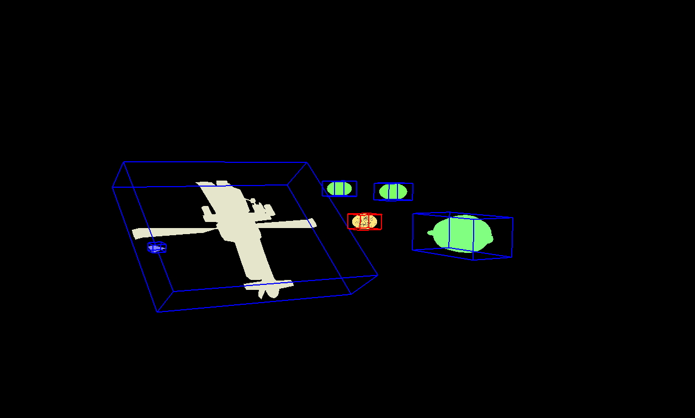
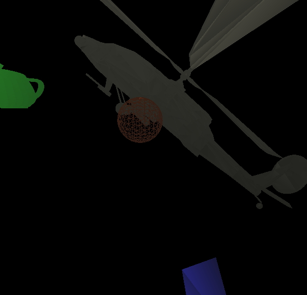

Below are images of three different camera views for a single scene using the fixed pipeline functionality from a program written using the API developed for the project. Each of these scenes was loaded upon initialization, although they could be lazily loaded on demand if the implementer so desired. All of the scenes and cameras were swapped out on the fly, and the state for each was saved so that when a particular scene's camera was reloaded, the view was restored.

Scene 1 - Camera 1: Midrange view of a scene with a teapot rendered using GL_FILL and a sphere rendered using GL_LINES with no objects selected.

Scene 1 - Camera 2: Bird's eye view.

Scene 1 - Camera 3: Closeup orthographic rendering with the teapot selected.

Scene 2 - Camera 1: View of a scene fit to screen with various local transformations performed on a teapot, helicopter, pyramid, and sphere (selected; rendered with GL_LINES).

Scene 2 - Camera 2: Same scene with a very narrow clipping distance between near plane and far plane with the helicopter selected.

Scene 2 - Camera 3: Closeup view without bounding boxes shown.

Scene 3 - Camera 1: View of a busy scene with various local transformations performed on a teapot, helicopter, pyramid, two filled spheres, and one wireframe sphere (selected; rendered with GL_LINES) and a midrange far plane for clipping.

Scene 3 - Camera 2: Closeup orthographic view containing parts of the teapot and a filled sphere, and the selected, fully visible wireframe sphere.

Scene 3 - Camera 3: Far off view of the whole scene with no clipping.
The following image demonstrates the use of the GLSL integration with very simple shaders and a single light setup.

Scene 2 - Camera 2: Midrange view of the scene rendered using the GLSL integration with simple Phong illumination and Gouraud Shading.